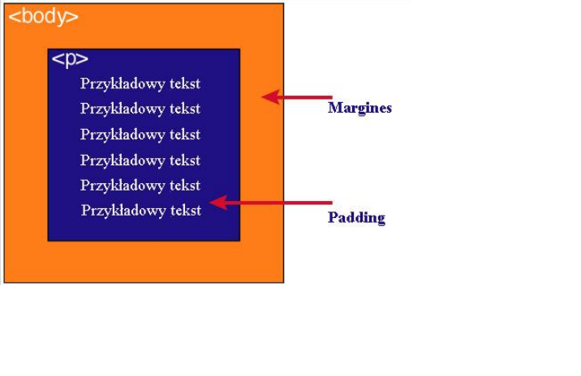

(ang. Box model). Pudełko składa się z kilku warstw:
2. Zawartość modelu pudełkowego
| Zawartość | Opis |
|---|---|
| content | zawartość elementu (np.: tekst, obrazek) |
| padding | otaczające marginesy wewnętrzne, odstęp między obramowaniem i zawartością elementu |
| border | obramowania wokół zawartości elementu, ma styl i kolor |
| margin | marginesy wokół ramki (margines zewnętrzny). Jest to pusty obszar wokół ramki, który nie ma koloru tła i jest przeźroczysty |
3. Dwie uwagi na temat modelu pudełkowego
Uwaga1
Padding, border i margin mogą mieć zerową wartośćUwaga2
Tło elementu jest określone dla wszystkich z podanych powyżej obszarów z wyjątkiem marginesów zewnętrznych, które zawsze są przezroczyste (transparent)4. Grafika obrazująca model pudełkowy

5. Grafika obrazującą różnicę pomiędzy paddingiem i marginesem wraz z opisem
Padding określa przestrzeń wokół danego elementu, np: < p> lub < div>, natomiast marginesprzestrzeń pomiędzy elementami

Jak widać na rysunku, padding oznaczony jest kolorem niebieskim. Określa on wielkość
przestrzeni wokół elementu < p>. Element ten posiada również margines zaznaczony kolorem
pomarańczowym. Jest to odległość od brzegu elementu < body>